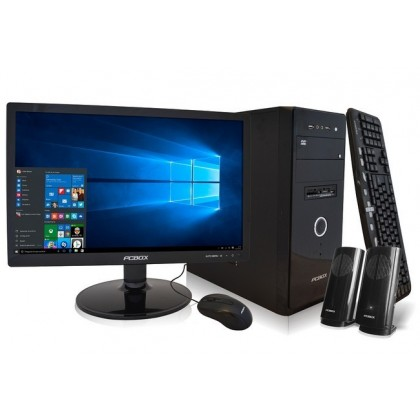

computadora core I7

Procesador Core i7(preferible séptima generación) Memoria RAM de 4 GB a 8 GB Disco duro de 500 GB o superior Pantalla de entre 13″ a 15″ (Mientras más grande la pantalla, mayor será el peso del equipo en el caso de una laptop) Batería con duración de 10 horas (en el caso de una laptop) Entradas USB 3.0, multilector de tarjetas, USB-C o Thunderbolt
Precio 100$Comprar
Computadora core I5
Procesador Core I5(preferible séptima generación) Memoria RAM de 4 GB a 8 GB Disco duro de 500 GB o superior Pantalla de entre 13″ a 15″ (Mientras más grande la pantalla, mayor será el peso del equipo en el caso de una laptop)Batería con duración de 10 horas (en el caso de una laptop)Entradas USB 3.0, multilector de tarjetas, USB-C o Thunderbolt
Precio 900$Comprar
Laptop core I7

CPU de bajo consumo Disco duro de 2,5 pulgadas o menor Módulos de Memoria RAM SO DIMM (Small Outline DIMM) Unidad lectora y grabadora de CD o DVD de formato reducido Teclado integrado Pantalla integrada tipo TFT, WXGA o OLED que a su vez realiza la función de tapa del portátil y facilita su movilidad Panel táctil touchpad o trackpad para manejar el puntero en lugar del mouse (ratón) Cargador (se pueden cargar en uso, para optimizar tiempo y energía) Batería, típicamente de 2 a 4 horas de duración.
Precio 800$Comprar